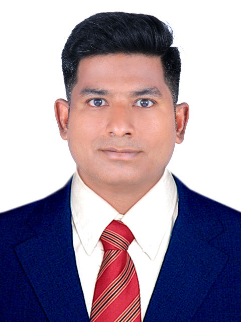

Braided river eco-morphodynamics
How large braided systems such as the Brahmaputra dissipate energy, shift their channels and settle into stable or unstable trajectories — quantified with entropy-based and process-based indicators.
Publishes as Nandi, K. K.
I study how large braided rivers like the Brahmaputra move, change and recover — and how vegetation, sediment and human interventions shape that behaviour — to design nature-inspired strategies for resilient river corridors.

Combining field surveys, laboratory flumes, numerical models and satellite data to understand river behaviour across scales — from turbulence around a vegetated bar to the stability of a 100-km braided reach.
How large braided systems such as the Brahmaputra dissipate energy, shift their channels and settle into stable or unstable trajectories — quantified with entropy-based and process-based indicators.
Laboratory investigations of how vegetated bars and floodplains alter flow, turbulence and secondary currents in bifurcated and sinuous channels — and how vegetation can serve as a nature-based solution.
Cloud computing on satellite imagery, GIS and hydrological modelling, together with underwater robotics and sensor-based systems for river surveys and real-time dam-safety monitoring.
Peer-reviewed work in Journal of Hydrology, Advances in Water Resources, CATENA, Ecohydrology, Ocean Engineering and Journal of Hydraulic Engineering.
Sponsored research and consultancy spanning dam safety, underwater exploration, Himalayan river systems and inter-basin water transfer.
Sensor-driven monitoring and predictive analytics to support safer operation and maintenance of dams.
Underwater robotics and sensing for surveys in water resources engineering.
TIH-TIDF, IIT GuwahatiAssessing the combined effects of multiple interventions along Himalayan river systems.
National Mission for Himalayan Studies (NMHS)Hydrodynamic system studies supporting a major inter-basin river linking scheme.
National Water Development Authority (NWDA)Remote-sensing based LULC mapping for an industrial mining area.
Lafarge Umiam Mining Pvt. Ltd.Bringing AI, remote sensing, GIS and sustainability into civil engineering classrooms — with an emphasis on conceptual understanding and real-world application.
Currently under guidance at SR University.
Supervised at CAPGS, BPUT Rourkela (2016–2018).
Read the research pillars and a couple of recent papers to find where your interests fit.
Send your CV, academic transcripts and a one-page note on the problem you'd like to work on.
Shortlisted candidates are invited to a short online discussion about ideas and fit.
Apply through the SR University Ph.D. admission process, mentioning Dr. Nandi as your intended supervisor.
Background in civil, water resources, environmental or geo-informatics engineering is welcome.
A decade of teaching, research and field programmes — from Odisha and Assam to Telangana.
Project: Technology for Underwater Exploration.
Water Resources Engineering & Management — eco-morphodynamic processes of large braided rivers. MHRD scholarship.
Supervised 11 M.Tech dissertations.
Water Resources Engineering & Management.
Open to research collaboration, student enquiries, invited talks and industry partnerships on river and water-resources problems.
The quickest way to reach me is by email.
See the application steps and include your CV and research interests.
River surveys, hydrodynamic modelling, remote sensing and monitoring — happy to discuss joint projects and consultancy.